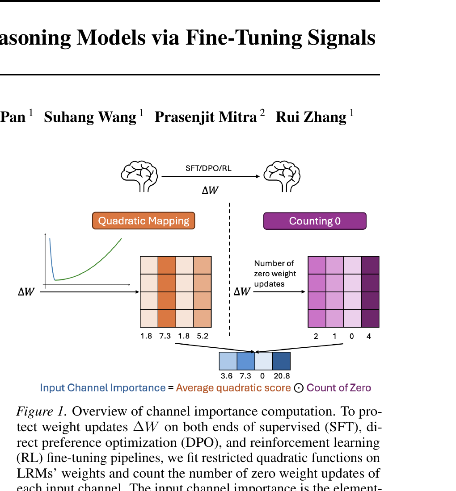
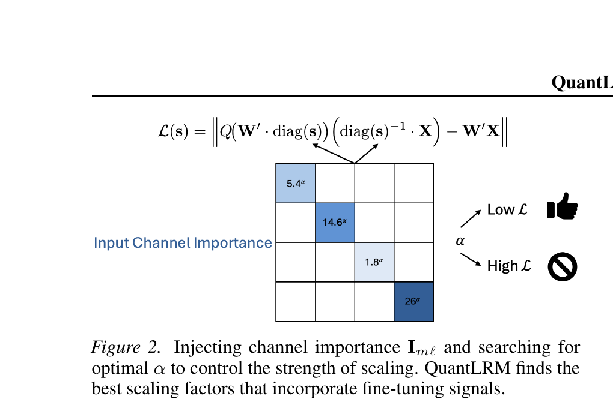

QuantLRM: Quantization of Large Reasoning Models via Fine-Tuning Signals
TL;DR
- 문제: 기존 PTQ (Post-Training Quantization) 방법들(AWQ, GPTQ 등)은 일반 LLM용으로 설계되어, LRM (Large Reasoning Model)의 3-bit 양자화 시 reasoning 성능이 크게 하락한다. Fine-tuning 과정에서 축적된 가중치 변화 정보가 양자화에 전혀 활용되지 않고 있다.
- 해결: Fine-tuning 중 가중치 변화량(weight update) $\Delta W$에서 양 극단(가장 작은 변화와 가장 큰 변화)이 가장 중요하다는 "protecting both ends" 가설을 세우고 검증한 뒤, 이를 channel importance로 변환하여 AWQ scaling에 주입하는 QuantLRM을 제안한다.
- 왜 작동하는가: 큰 weight update는 downstream reasoning 능력의 핵심이고, 극소(zero 포함) weight update는 모델의 일반 능력(linguistic, instruction-following)에 중요하다. 양 극단을 보호하면 양자화 시 reasoning과 general capability 모두 보존된다.
- 비유: 건물을 리모델링(fine-tuning)할 때, 크게 변경된 핵심 구조물(큰 update)과 전혀 건드리지 않은 기초(zero update)가 가장 중요하다. 중간 정도 수정된 부분은 상대적으로 덜 중요하다 — 양 극단을 보호하면 건물(모델)이 안정적으로 유지된다.
핵심 기여 (Key Contributions)
- "Protecting both ends" 가설 검증: Fine-tuning 시 가장 작은/큰 weight update가 중간 크기 update보다 양자화에 더 중요하다는 가설을 mixed-precision 실험으로 검증 (AVG 70.28% vs "SFT mid" 65.08%)
- QuantLRM 제안: Restricted quadratic function으로 양 극단에 높은 importance를 부여하고, zero update count를 곱하여 channel importance를 계산한 뒤 AWQ scaling에 주입하는 PTQ 방법
- 다양한 fine-tuning 유형에서 일관적 개선: SFT, DPO (Direct Preference Optimization), RL (Reinforcement Learning) fine-tuned 모델 모두에서 기존 최강 PTQ 대비 3-bit에서 최대 6.55% 개선 (Olmo-3-7B-Think RL 모델)
- Pseudo-fine-tuning 지원: Pre-fine-tuned checkpoint이 없는 LRM도 간단한 pseudo-fine-tuning으로 weight update 신호를 수집하여 양자화 가능
1. 배경: PTQ의 한계와 Fine-Tuning 신호의 가능성
문제 정의
Weight-only quantization은 LLM 압축의 핵심 기술이다. 기존 PTQ 방법들은 activation 분포(AWQ)나 2차 정보(GPTQ)를 활용하여 효율적으로 양자화하지만, 이들은 일반 LLM용으로 설계되었다. 최근 분석(Zhang et al., 2025; Liu et al., 2025)에 따르면, 4-bit에서는 거의 무손실이지만 ##3-bit에서는 LRM의 reasoning 성능이 크게 하락한다.##
한편, 현대의 LRM들(DeepSeek-R1, Olmo-3, Qwen3 등)은 extensive한 fine-tuning을 거치지만, 이 과정에서 축적된 가중치 변화 정보($\Delta W$)는 PTQ 시 완전히 무시된다.
핵심 착안점: Magnitude Pruning에서의 영감
Classical magnitude pruning(Han et al., 2015)은 가중치의 절대값을 importance로 사용한다. QuantLRM은 이 아이디어를 weight update의 크기로 확장한다: fine-tuning 전후 가중치 차이 $\Delta W_{m\ell} = |W'_{m\ell} - W_{m\ell}|$가 channel importance와 강하게 상관한다는 가설이다. 여기서 $m$은 linear module (예: self-attention query projection), $\ell$은 layer를 나타낸다.
Fine-tuning 흔적 관련 선행 연구
Fine-tuning의 흔적은 주로 해석(interpretation)과 안전성(safety) 연구에 활용되어 왔다. Fine-tuned BERT 모델의 파라미터 변화가 저차원 부분공간에 집중된다는 발견(Zhang et al., 2023)이나, truthfulness와 refusal 행동이 특정 weight update에 인코딩된다는 발견(Du et al., 2025)이 있다. 그러나 이러한 연구들은 weight-only compression에 필요한 fine-grained importance score를 제공하지 않으며, SVD 등을 사용하여 LRM 규모에서는 비용이 크다. QuantLRM은 간단한 heuristic("protecting both ends")으로 이 gap을 메운다.
[Figure 1 설명]: QuantLRM의 전체 개요. Fine-tuning(SFT/DPO/RL)에서 발생하는 weight update $\Delta W$에 대해, restricted quadratic mapping으로 양 극단의 importance를 추출(좌측)하고, zero weight update를 count(우측)하여 element-wise 곱으로 최종 channel importance를 계산한다.

2. 방법론: Protecting Both Ends
2.1 가설 및 검증
가설: Fine-tuning 시 가장 작은 weight update와 가장 큰 weight update가 중간 크기보다 양자화에 더 중요하다.
직관적으로, 큰 update는 downstream task(reasoning)에 핵심적인 변화를 인코딩하고, 극소 update(0 포함)는 모델의 기본 능력(언어 이해, instruction following)이 이미 최적화되어 변경이 불필요한 가중치를 나타낸다.
검증 실험 (Table 1): R1-Distill-Qwen-32B를 3-bit로 양자화하되, 각 protection signal에 따라 상위 5%의 channel을 16-bit로 보존하는 mixed-precision 설정으로 비교한다.
| Protection Signal | AIME-120 | FOLIO | Temporal | GPQA-D | AVG |
|---|---|---|---|---|---|
| Activation (AWQ calibration) | 44.2 | 73.9 | 99.6 | 56.1 | 68.45 |
| Activation (reasoning calibration) | 40.8 | 72.4 | 100.0 | 54.0 | 66.80 |
| SFT (weight update 절대값) | 34.2 | 70.4 | 99.2 | 50.5 | 63.58 |
| SFT mid (중간 보호) | 38.3 | 72.4 | 99.6 | 50.0 | 65.08 |
| SFT both ends (양 극단 보호) | 49.2 | 77.8 | 99.6 | 54.5 | 70.28 |
핵심 발견:
- ##"SFT both ends"가 최강 activation signal 대비 +1.83% 개선## (68.45 → 70.28), 5%의 가중치만 보호하면서도 유의미한 차이
- Weight update 절대값만 사용("SFT")하면 activation보다 열등 — 단순히 큰 update만 보호하는 것은 불충분
- "SFT mid"(중간 보호)는 "SFT both ends"보다 5.20% 열등 — 양 극단이 중간보다 중요하다는 가설을 뒷받침
2.2 Mapping Function 설계
Weight update $\Delta w$를 importance score $i^c_{m\ell}$로 변환하는 mapping function $f(\cdot)$를 설계한다. 핵심 관찰: 모든 module/layer에 걸친 weight update 분포가 불균등하며, 저크기에 집중되어 있다. 따라서 median $\Delta w_{\text{mid}}$를 기준으로 좌/우 두 개의 restricted quadratic function을 피팅한다.
$$f(\Delta w) = \begin{cases} y_{\min} & \Delta w = 0 \\ y_{\min} + (y_{\max} - y_{\min}) \left(\frac{\Delta w_{\text{mid}} - \Delta w}{\Delta w_{\text{mid}} - \Delta w_{\text{min}}}\right)^2 & 0 < \Delta w \leq \Delta w_{\text{mid}} \\ y_{\min} + (y_{\max} - y_{\min}) \left(\frac{\Delta w - \Delta w_{\text{mid}}}{\Delta w_{\text{max}} - \Delta w_{\text{mid}}}\right)^2 & \Delta w > \Delta w_{\text{mid}} \end{cases} \tag{5}$$직관적으로, 이 함수는 U자 형태로, median 부근은 낮은 importance ($y_{\min} = 1$), 양 극단은 높은 importance ($y_{\max} = 10$)를 부여한다. Zero update는 별도 처리하여 median 계산에서 제외한다.
[Figure 2 설명]: Channel importance $\mathbf{I}_{m\ell}$를 AWQ scaling에 주입하는 과정. Importance 값(예: 5.4, 14.6 등)이 높은 channel에는 큰 scaling factor $\alpha$가 적용되어 quantization error가 작아지고 (Low $\mathcal{L}$), 낮은 channel은 더 거친 양자화를 허용한다 (High $\mathcal{L}$).

2.3 Zero Update Count의 통합
Fine-tuned LRM에서 zero weight update는 전체의 1% 이상을 차지한다. Zero update가 많은 channel은 fine-tuning에 의해 거의 변하지 않았으므로 모델의 기본 능력에 중요할 가능성이 높다. 이를 반영하여 최종 channel importance를 다음과 같이 계산한다:
$$I^c_{m\ell} = \left(\frac{1}{N} \sum_{n=1}^{N} f\left(\Delta w^{c,(n)}_{m\ell}\right)\right) \cdot (Z^c_{m\ell} + 1) \tag{6}$$여기서 $Z^c_{m\ell}$는 channel $c$에서 zero update의 개수이다. $+1$은 $Z = 0$인 경우를 방지한다. 직관적으로, quadratic mapping의 평균 score와 zero update 빈도를 곱하여, 양 극단의 update가 많고 zero update도 많은 channel에 높은 importance를 부여한다.
2.4 AWQ Scaling에 주입
Quantization loss는 AWQ의 scaling 프레임워크를 따른다:
$$L(s) = \|Q(W' \cdot \text{diag}(s)) \cdot \text{diag}(s)^{-1} \cdot X - W'X\|$$Channel importance $I_{m\ell}$를 $s = I_{m\ell}^{\alpha}$로 설정하고, $\alpha$를 $[0, 1]$ 구간에서 20개 후보 중 loss를 최소화하는 값으로 검색한다. $I_{m\ell}$는 사전 계산되므로, $\alpha$ 검색은 AWQ와 동일한 시간에 수행된다.
3. 실험 설정
데이터셋
- AIME-120: 2022~2025년 수학 경시대회 120문항 (수학적 reasoning)
- FOLIO: 논리적 reasoning (first-order logic)
- Temporal Sequences: BIG-Bench Hard의 시간적 reasoning
- GPQA-Diamond: 대학원 수준 STEM 과학 reasoning
- Calibration: AWQ 기본 calibration set (128 samples, 512 tokens) — 다른 baseline보다 작은 크기
- Validation: AIME 2021 + FOLIO training set 100개 random sample
모델
| 모델 | Fine-tuning 유형 | 비고 |
|---|---|---|
| R1-Distill-Llama-70B | SFT | DeepSeek-R1 distillation |
| R1-Distill-Qwen-32B | SFT | DeepSeek-R1 distillation |
| R1-0528-Qwen3-8B | SFT | DeepSeek-R1 distillation |
| Olmo-3-7B-Think-DPO | DPO | SFT→DPO의 weight update 사용 |
| Olmo-3-7B-Think | RLVR | DPO→RL의 weight update 사용 |
| Qwen3-1.7B | Pseudo-fine-tuning | Pre-fine-tuned checkpoint 없는 경우 |
Baseline
PTQ 방법만 비교 (QAT 제외, QuantLRM이 PTQ 효율을 유지하므로): GPTQ (2차 정보), GPTAQ (layer 출력 calibration), AWQ (activation 분포), ANY3 (non-uniform 3-bit 표현). 주로 W3A16 (3-bit weight-only, activation 16-bit) 비교.
구현 세부사항
- 16-bit 연산만 사용하므로, 대형 모델에서 $I^c_{m\ell}$이 overflow할 수 있음 → MLP 모듈의 $\Delta W$를 slicing하여 zero update count 계산 (R1-Llama-70B, R1-Qwen-32B에 적용)
- R1-Llama-70B에서는 channel importance에 activation 절대값을 추가로 곱함 (validation set 기반 선택)
- Inference: vLLM 사용, AWQ kernel 호환
4. 실험 결과
논문이 답하려는 연구 질문:
- RQ1: QuantLRM이 기존 최강 PTQ 대비 얼마나 개선하는가?
- RQ2: QuantLRM의 설계가 최적인가? (ablation)
- RQ3: Pre-fine-tuned checkpoint 없이도 사용 가능한가? (pseudo-fine-tuning)
- RQ4: 효율적인 방법인가? (시간/속도 비용)
- RQ5: 4-bit에서도 경쟁력이 있는가?
RQ1: 3-Bit 양자화 성능 (Table 2)
실험 의도: QuantLRM이 SFT/DPO/RL 다양한 fine-tuning 유형의 LRM에서 일관적으로 개선을 보이는가?
SFT 모델 결과
| 모델 | 방법 | AIME-120 | FOLIO | Temporal | GPQA-D | AVG |
|---|---|---|---|---|---|---|
| R1-Llama-70B | 16-bit | 56.7 | 79.8 | 100.0 | 60.6 | 74.28 |
| GPTQ | 37.5 | 77.3 | 99.2 | 60.6 | 68.65 | |
| GPTAQ | 38.3 | 76.8 | 99.2 | 50.0 | 66.08 | |
| AWQ | 44.2 | 74.9 | 100.0 | 57.6 | 69.18 | |
| QuantLRM | 49.2 | 78.3 | 99.6 | 58.1 | 71.30 | |
| R1-Qwen-32B | 16-bit | 56.7 | 83.7 | 99.2 | 61.1 | 75.18 |
| GPTQ | 41.7 | 77.3 | 99.6 | 54.0 | 68.15 | |
| GPTAQ | 35.0 | 72.9 | 99.6 | 60.1 | 66.90 | |
| AWQ | 50.0 | 77.3 | 99.6 | 55.1 | 70.50 | |
| ANY3 | 44.2 | 80.3 | 99.6 | 58.1 | 70.55 | |
| QuantLRM | 53.3 | 80.8 | 99.6 | 60.6 | 73.58 | |
| R1-Qwen3-8B | 16-bit | 59.2 | 79.8 | 99.6 | 63.6 | 75.55 |
| GPTQ | 8.3 | 77.3 | 82.8 | 35.9 | 51.08 | |
| GPTAQ | 6.7 | 78.8 | 84.4 | 30.3 | 50.05 | |
| AWQ | 34.2 | 77.8 | 98.4 | 47.5 | 64.48 | |
| ANY3 | 15.0 | 69.0 | 54.4 | 30.3 | 42.18 | |
| QuantLRM | 40.0 | 76.8 | 99.2 | 48.5 | 66.13 |
DPO / RL 모델 결과
| 모델 | 유형 | 방법 | AIME-120 | FOLIO | Temporal | GPQA-D | AVG |
|---|---|---|---|---|---|---|---|
| Olmo-3-7B-Think-DPO | DPO | 16-bit | 57.5 | 70.4 | 98.8 | 49.0 | 68.93 |
| GPTQ | 16.7 | 63.5 | 95.6 | 39.4 | 53.80 | ||
| AWQ | 32.5 | 69.5 | 94.8 | 35.9 | 58.18 | ||
| QuantLRM | 35.8 | 65.0 | 96.4 | 36.4 | 58.40 | ||
| Olmo-3-7B-Think | RLVR | 16-bit | 54.2 | 75.4 | 99.6 | 45.5 | 68.68 |
| GPTQ | 21.7 | 69.5 | 93.6 | 41.9 | 56.68 | ||
| AWQ | 28.3 | 76.4 | 84.0 | 35.9 | 56.15 | ||
| QuantLRM | 38.3 | 74.4 | 96.8 | 43.4 | 63.23 |
패턴 분석:
- ##QuantLRM은 모든 모델·모든 fine-tuning 유형에서 일관적으로 최강 baseline을 능가## — SFT에서 최대 +3.03% (R1-Qwen-32B), RL에서 +6.55% (Olmo-3-7B-Think)
- AIME-120에서 항상 선두: 가장 어려운 벤치마크에서 특히 강함 — fine-tuning 신호가 hard reasoning에 더 효과적
- RL > SFT > DPO 순으로 개선 폭이 큼: RL fine-tuning은 가장 강한 weight update 신호를 남기고, DPO는 상대적으로 약한 fine-tuning 신호를 남김
- ##QuantLRM은 가장 작은 calibration set (128 samples, 512 tokens)을 사용하면서도## 더 큰 calibration을 쓰는 baseline들을 능가
- R1-Qwen3-8B에서 ANY3는 Temporal에서 54.4%로 붕괴하지만, QuantLRM은 99.2%로 안정적
RQ2: Ablation Study (Table 3)
실험 의도: QuantLRM의 각 설계 요소(양 극단 보호, zero update 처리)가 개별적으로 얼마나 기여하는가?
R1-Qwen-32B (5% 보호)
| Protection Signal | AIME-120 | FOLIO | Temporal | GPQA-D | AVG |
|---|---|---|---|---|---|
| SFT both ends (no zero handling) | 34.2 | 71.4 | 98.4 | 47.5 | 62.88 |
| SFT both ends w/ 0s maximized | 30.8 | 76.4 | 99.2 | 50.5 | 64.23 |
| SFT both ends w/ 0s minimized | 32.5 | 74.9 | 98.8 | 48.5 | 63.68 |
| SFT both ends (counting zeros) | 49.2 | 77.8 | 99.6 | 54.5 | 70.28 |
8B 모델 비교 (30% 보호)
| 모델 | Signal | AIME-120 | FOLIO | Temporal | GPQA-D | AVG |
|---|---|---|---|---|---|---|
| R1-Llama-8B | Activation (AWQ cal) | 5.0 | 52.7 | 28.0 | 19.7 | 26.35 |
| Activation (reasoning cal) | 5.0 | 49.3 | 27.6 | 14.1 | 24.00 | |
| SFT mid | 4.2 | 54.2 | 28.8 | 17.2 | 26.10 | |
| SFT both ends (no zero) | 20.0 | 63.5 | 56.8 | 36.4 | 44.18 | |
| SFT both ends | 16.7 | 59.1 | 64.4 | 33.3 | 43.38 | |
| R1-Qwen3-8B | Activation (AWQ) | 0.0 | 39.4 | 24.8 | 11.1 | 18.83 |
| SFT both ends | 45.0 | 72.9 | 99.6 | 45.5 | 65.75 |
핵심 발견:
- ##Zero update counting이 32B 모델에서 +7.40% 개선의 핵심## (62.88 → 70.28). Zero를 $y_{\max}$로 설정하거나 $y_{\min}$으로 설정하는 것보다 count를 곱하는 것이 훨씬 효과적
- R1-Qwen3-8B에서 activation 기반 대비 "SFT both ends"가 ##46.92% 절대 개선## (18.83 → 65.75) — fine-tuning 신호의 압도적 우위
- R1-Llama-8B에서는 "SFT both ends (no zero handling)"이 counting보다 근소하게 우수 (44.18 vs 43.38) — 모델에 따라 zero counting의 효과가 다르지만, counting이 일관적으로 좋거나 근소한 차이이므로 최종 설계로 채택
RQ3: Pseudo-Fine-Tuning (Figure 3)
실험 의도: Pre-fine-tuned checkpoint이 없는 LRM에서도 QuantLRM을 적용할 수 있는가?
Qwen3-1.7B에 OpenR1-Math-94k로 SFT pseudo-fine-tuning을 수행하고, 다양한 training step에서 weight update를 수집하여 3-bit 양자화 성능을 측정한다.
결과:
- Training step이 증가할수록 QuantLRM 성능이 점진적으로 향상 — weight update가 누적될수록 더 강한 fine-tuning 신호 제공
- 모든 step에서 GPTQ를 능가하며, 1956 step 이후부터 AWQ도 능가
- 수천 step의 pseudo-fine-tuning으로 충분한 신호 수집 가능 — 모델이 수렴할 필요 없음
RQ4: 비용 및 속도 (Table 5)
실험 의도: QuantLRM이 추가하는 계산 비용은 얼마나 되며, inference 속도에 영향이 있는가?
| 방법 | Prep Time | Search Time | Tokens/s |
|---|---|---|---|
| AWQ | — | 6min 28s | 30.24 |
| QuantLRM | 2min 27s | 6min 35s | 30.33 |
##QuantLRM은 단 2분 27초의 일회성 준비 비용만 추가##하며, 이는 offline에서 수행되어 inference에 영향 없다. 양자화 검색 시간과 inference latency는 AWQ와 동일하다. AWQ kernel과 호환되므로 배포 시 추가 비용이 없다.
RQ5: 4-Bit 양자화 (Table 4)
실험 의도: QuantLRM이 4-bit에서도 경쟁력이 있는가?
| 방법 | AIME-120 | FOLIO | Temporal | GPQA-D | AVG |
|---|---|---|---|---|---|
| 16-bit | 56.7 | 79.8 | 100.0 | 60.6 | 74.28 |
| 4-bit GPTQ | 55.8 | 79.3 | 98.8 | 64.6 | 74.63 |
| 4-bit AWQ | 60.8 | 77.8 | 99.2 | 64.6 | 75.60 |
| 4-bit QuantLRM | 58.3 | 77.3 | 99.6 | 66.2 | 75.35 |
4-bit에서는 모든 방법이 16-bit과 동등하거나 오히려 우수하여 개선 여지가 거의 없다. QuantLRM은 AWQ와 동등한 수준으로, "safe default"로서 3-bit에서는 큰 개선, 4-bit에서는 안정적 성능을 제공한다.
5. 비판적 분석
강점
- 직관적이고 간단한 아이디어: "양 극단 보호"라는 명확한 가설에서 출발, restricted quadratic function이라는 단순한 수학적 도구로 구현. 복잡한 학습 없이 PTQ 효율 유지
- 광범위한 적용 범위: SFT, DPO, RL 세 가지 fine-tuning 유형 모두 검증. 70B까지 확장 가능. Pseudo-fine-tuning으로 checkpoint 없는 경우도 지원
- 공정한 비교: QuantLRM이 가장 작은 calibration set을 사용하면서도 baseline들을 능가 — 유리한 조건이 아닌 불리한 조건에서의 우위
- 실용적 배포: AWQ kernel, vLLM과 호환. 추가 inference 비용 없음. 코드 공개
한계 및 질문
- 4-bit에서는 개선 미미: 4-bit이 이미 포화 상태이므로 3-bit 이하에서만 의미 — 3-bit 배포가 실무에서 얼마나 보편적인지 불확실
- 모델별 adaptation 필요: R1-Llama-70B에서는 activation 곱하기, 대형 모델에서는 MLP slicing 등 모델별 tuning이 필요 — 완전한 자동화가 어려움
- Reasoning 벤치마크 한정: AIME, FOLIO, Temporal, GPQA 4개만 평가. 코딩(HumanEval, LiveCodeBench)이나 general NLP 벤치마크 미포함
- 반복 실험 미보고: 표준편차나 multiple seeds 결과가 보고되지 않아 결과의 안정성 불확실
- Pre-fine-tuned checkpoint 의존성: Fine-tuning signal의 품질이 pre-fine-tuned checkpoint의 가용성과 fine-tuning recipe에 의존. Pseudo-fine-tuning이 대안이지만 수천 step의 추가 학습 필요
- Activation 양자화 미지원: Weight-only quantization만 다루며, W4A4 등 activation 양자화와의 결합은 미검토
6. Key Takeaways
- Fine-tuning 흔적은 강력한 양자화 신호: 기존에 무시되던 weight update 정보가 activation이나 2차 정보보다 효과적인 channel importance 지표가 될 수 있다. 특히 3-bit 극저비트에서 그 차이가 극대화된다.
- "양 극단 보호"는 직관적이면서 효과적: 큰 update(task-specific)와 zero update(general capability) 모두 보호하는 U자형 importance가 중간만 보호하는 것보다 5% 이상 우수하다.
- RL fine-tuned 모델에서 가장 큰 효과: RL은 가장 강한 fine-tuning signal을 남기므로, QuantLRM의 개선 폭이 6.55%로 가장 크다. RL-based reasoning model이 늘어나는 추세에서 실용적 가치가 높다.
- Pseudo-fine-tuning으로 범용성 확보: Pre-fine-tuned checkpoint이 없어도 수천 step의 간단한 fine-tuning으로 충분한 signal을 수집할 수 있다.
- 실무 적용 시: 3-bit LRM 배포가 필요한 경우, fine-tuned model과 pre-fine-tuned model 사이의 $\Delta W$를 계산하여 QuantLRM을 적용하면, AWQ/GPTQ 대비 유의미한 reasoning 성능 회복이 가능하다. AWQ kernel과 호환되므로 추가 인프라 변경 불필요.